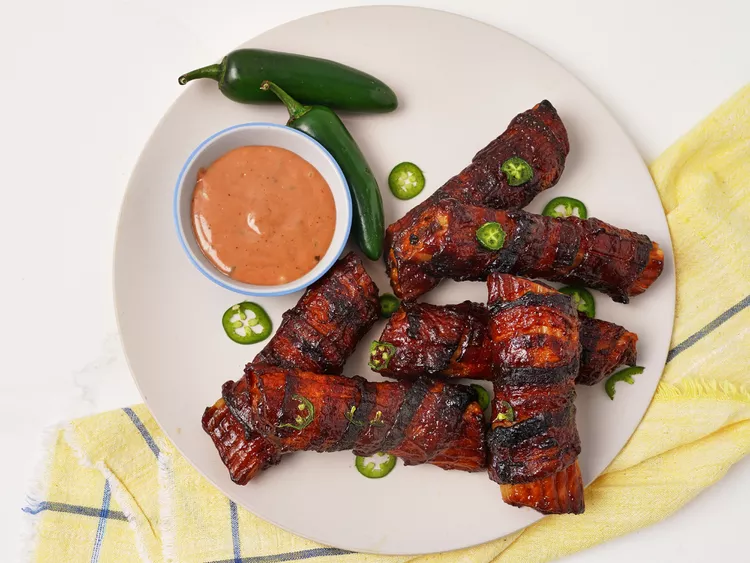

Baked Shotgun Shells

Description
If you've never heard of shotgun shells as a food, then you're so lucky you stopped by today. Because it's sooooo good! I've been making shotgun shells for a little while now.
They make the perfect appetizer for any occasion, and I've even been known to serve them as a fun meal for special days like birthdays or homecomings.
It's one of those recipes that has a name that leaves people scratching their heads and a flavor that always has them coming back fo more.
It's perfect for any party or get-together, and it's so easy to make, you'll be eager to churn out these tasty, bacon wrapped bites.
These baked shotgun shells are an out of this world appetizer - pasta shells are stuffed with ground sirloin and cheese, wrapped in bacon, and baked until crispy.
It's a hearty, delicious appetizer recipe that everyone loves, and it goes quickly when served.
It's oven baked which is great for those who don't own a smoker.
Ingredients
- 24 manicotti pasta shells (from 2 8-ounce packages)
- 1/2 lb. ground sirloin
- 1 lb. spicy Italian sausage
- 1/4 cup finely chopped onion
- 1 teaspoon kosher salt
- 1/2 teaspoon freshly ground black pepper
- 1/2 teaspoon garlic powder
- 1/2 cup shredded Cheddar and Monterey Jack cheese
- 1 (8-ounce package) garlic and herb cream cheese, softened
- 24 slices bacon (not thick cut)
- 1 ½ cups BBQ sauce, plus more if desired
- 2 jalapenos, very thinly sliced (optional)
Steps
- Bring a large pot of water to a boil. Add pasta and cook 5 minutes. Drain and rinse with cold water.
Spread shells out on a paper towel lined baking sheet and allow to drain.
- Preheat the oven to 325 degrees F (160 degrees C).
- Combine ground sirloin, Italian sausage, onion, salt, pepper, garlic powder, cheese, and cream cheese in a bowl.
Stir until well combined and spoon mixture into a piping bag or resealable bag and cut off one corner of the bag.
- Fill each pasta shell evenly with the filling and wrap each filled shell with bacon.
Place shells on a lightly greased rack set inside a baking sheet and brush evenly with barbecue sauce.
- Bake in the preheated oven for 30 minutes, flip each shell, and brush again with barbecue sauce.
- Return to the oven and bake until deep golden brown and the bacon is slightly crispy, 25 to 30 minutes more.
Flip once more and brush with any more BBQ sauce if desired and cook 5 more minutes.
- Remove from oven, sprinkle with jalapeno slices and let stand 10 minutes before serving.